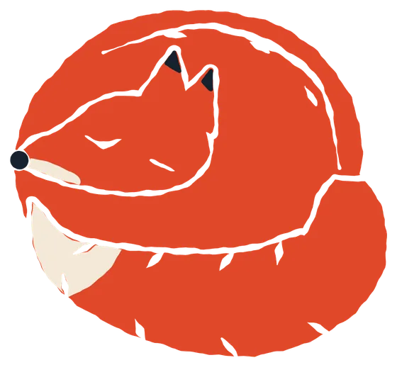
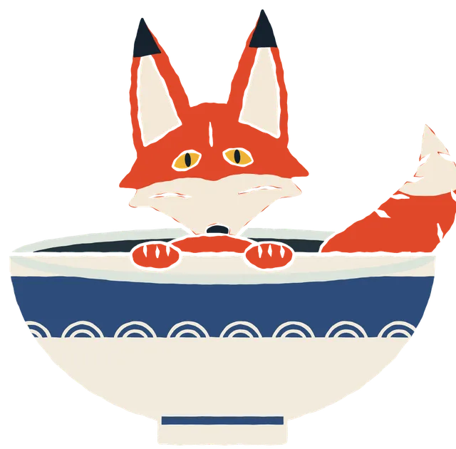
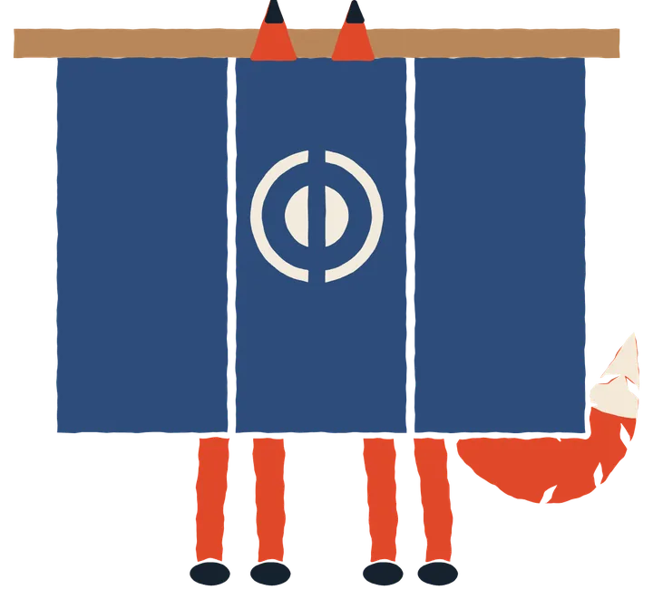

O sono desce aos poucos
Meia hora a menos por semana, até deitar às 23h.

10 potes de marmita
São 9 refeições por semana (5 almoços e 4 jantares) e sobra 1 pote. Cozinha na terça à noite: de quarta a sexta os potes ficam na geladeira, e os de segunda e terça vão pro congelador. As receitas e a lista do mercado

Mercado
O da semana é na terça, na volta do grupo, já com o que vai cozinhar à noite. O do mês é no 1º sábado, das 9h às 11h, com a Iara. Abrir a lista
Reunião geral da Allos
No último sábado do mês, das 10h às 12h. Blindada.